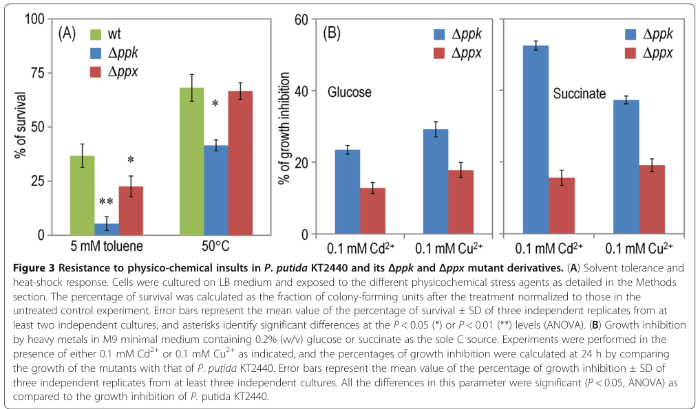

Polyphosphate kinase 1 (PPK1; EC 2.7.4.1), the principal enzyme responsible for inorganic polyphosphate (polyP) synthesis in Pseudomonas putida KT2440 (locus PP_5217). It catalyzes the reversible, processive transfer of the terminal gamma-phosphate of ATP onto a growing linear polyP chain ([phosphate](n) + ATP = [phosphate](n+1) + ADP), using Mg2+ as cofactor and proceeding through an autophosphorylated histidine intermediate (His472 in this protein). The enzyme is a cytoplasmic ~82 kDa member of the PPK1 family, belonging to the phospholipase D superfamily of phosphotransferases. PolyP made by PPK1 serves as a phosphate and high-energy phosphate (ATP) reservoir and as a metal-ion chelator. In P. putida, ppk deletion lowers intracellular polyP by roughly 70-90%, identifying PPK1 as the dominant polyP polymerase, and impairs stationary-phase survival, swimming motility, biofilm formation, and tolerance to multiple stresses (UV, beta-lactams, heavy metals, solvents, heat), partly through effects on the stress sigma factor RpoS. The gene is adjacent to the exopolyphosphatase gene ppx (PP_5216), with which it forms the polyP homeostasis module.
| GO Term | Evidence | Action | Reason |
|---|---|---|---|
|
GO:0006799
polyphosphate biosynthetic process
|
IEA
GO_REF:0000120 |
ACCEPT |
Summary: Core biological process. PPK1 is the enzyme that synthesizes long-chain polyP from ATP, and deletion of ppk in P. putida KT2440 reduces intracellular polyP by ~70-90%, directly confirming its role in polyP biosynthesis.
Reason: The IEA annotation is fully consistent with the experimentally validated function of this protein. Nikel et al. (2013, PMID:23687963) showed Delta-ppk abolishes the majority of cellular polyP, establishing PP_5217 as the main polyP polymerase. This is a core function of the gene.
|
|
GO:0008976
polyphosphate kinase activity
|
IEA
GO_REF:0000120 |
ACCEPT |
Summary: Core molecular function. This is the defining catalytic activity of PPK1 (EC 2.7.4.1, RHEA:19573): ATP + [phosphate](n) = ADP + [phosphate](n+1). Supported by the conserved PPK1 active-site histidine (His472) and ATP/Mg2+ binding residues, family membership, and the experimental polyP phenotype.
Reason: The molecular function annotation is well supported by family/domain assignment (HAMAP MF_00347, PPK1 family) and corroborated experimentally in P. putida (PMID:23687963). This is the core function of the gene.
|
|
GO:0009358
polyphosphate kinase complex
|
IEA
GO_REF:0000002 |
KEEP AS NON CORE |
Summary: Cellular component annotation derived from InterPro2GO. PPK1 enzymes are cytoplasmic and the active form is oligomeric, so a "polyphosphate kinase complex" annotation is plausible. However, this is purely an InterPro electronic mapping with no direct evidence for a defined complex in P. putida, and the more informative localization is cytoplasm.
Reason: The annotation is not wrong (PPK1 functions as a homo-oligomer), but it is a generic InterPro2GO inference without organism-specific complex evidence and is not the core descriptor of the gene's activity. Retained as non-core rather than removed, per guidance against over-ruling electronic CC mappings that are biologically reasonable.
|
The research report should be a detailed narrative explaining the function, biological processes, and localization of the gene product. Citations should be given for all claims.
You should prioritize authoritative reviews and primary scientific literature when conducting research. You can supplement
this with annotations you find in gene/protein databases, but these can be outdated or inaccurate.
We are specifically interested in the primary function of the gene - for enzymes, what reaction is catalyzed, and what is the substrate specificity? For transporters, what is the substrate? For structural proteins or adapters, what is the broader structural role? For signaling molecules, what is the role in the pathway.
We are interested in where in or outside the cell the gene product carries out its function.
We are also interested in the signaling or biochemical pathways in which the gene functions. We are less interested in broad pleiotropic effects, except where these elucidate the precise role.
Include evidence where possible. We are interested in both experimental evidence as well as inference from structure, evolution, or bioinformatic analysis. Precise studies should be prioritized over high-throughput, where available.
The Pseudomonas putida KT2440 gene ppk (locus PP_5217; UniProt Q88CG4) encodes the organism’s principal polyphosphate kinase 1 (PPK1), a cytoplasmic enzyme that synthesizes inorganic polyphosphate (polyP) primarily by transferring terminal phosphate from ATP (and in general NTPs) onto a growing polyP chain. Genetic deletion of ppk causes a ~70–90% decrease in intracellular polyP, establishing PP_5217/Q88CG4 as the major polyP polymerase in this strain (nikel2013accumulationofinorganic pages 2-4). In KT2440, PPK1/polyP contributes to stress endurance (UV, antibiotics, solvents, metals, heat), stationary-phase survival via effects on RpoS regulation, and “catalytic vigor” during oxidative biotransformations such as m-xylene biodegradation (nikel2013accumulationofinorganic pages 1-2, nikel2013accumulationofinorganic pages 5-7).
PolyP is a linear polymer of inorganic phosphate residues linked by high-energy phosphoanhydride bonds. PolyP can function as a phosphorus reserve and as a high-energy phosphate/ATP buffer, and is implicated in a wide range of bacterial physiological processes (nikel2013accumulationofinorganic pages 1-2, hofmann2023polyphosphatemetabolismand pages 32-34).
PPK1 is the canonical bacterial polyP polymerase. In P. putida KT2440 and other bacteria, PPK1 catalyzes reversible polymerization of terminal phosphate from ATP (and more generally NTPs) into polyP, producing NDP as the coproduct; Nikel et al. explicitly describe the core reaction as NTP + polyP(n−1) → polyP(n) + NDP, and polyP turnover includes reversible hydrolysis steps within the broader metabolic scheme (nikel2013accumulationofinorganic pages 1-2, nikel2013accumulationofinorganic pages 2-4). A recent review summarizes that PPK family enzymes (PPK1/PPK2) reversibly catalyze polymerization of ATP terminal phosphate into a nascent polyP chain; PPK1 is described as being present in the bacterial cytoplasm (schoeppe2024anupdateon pages 2-4).
The gene symbol “ppk” is used in diverse bacteria and can refer to different enzyme families. In the KT2440 study, the authors distinguish PPK1 (polyP synthesis from ATP/NTP) from PPK2, which is “supposed to preferentially” catalyze conversion of polyP back into NTPs (especially GTP) (nikel2013accumulationofinorganic pages 1-2). This distinction is important for ensuring that claims are mapped to PP_5217/Q88CG4 (PPK1) rather than unrelated PPK2 paralogs (sometimes annotated as ppkB or similar).
A 2023 synthesis summarizes PPK1 as typically ~75 kDa, highly processive, with a conserved histidine autophosphorylation step required for catalysis and a strong preference for polyP synthesis relative to the reverse direction; it also notes strict ATP preference for synthesis and that polyP chains can be hundreds to >1,000 residues in cells depending on system and conditions (neville2023polyphosphateanew pages 18-24). While this is not P. putida-specific biochemistry, it supports mechanistic inference for the PPK1 family member Q88CG4.
Nikel et al. (2013; Microbial Cell Factories; published May 2013; https://doi.org/10.1186/1475-2859-12-50) identify ORF PP_5217 as encoding a polyphosphate kinase (Ppk) (727 aa; ~34% identity to E. coli Ppk) and show that deleting ppk reduces intracellular polyP by ~70–90%, thereby “accrediting” its role in polymer synthesis (nikel2013accumulationofinorganic pages 2-4). This evidence anchors the functional annotation of UniProt Q88CG4 as the PPK1-family polyP polymerase responsible for the bulk of polyP accumulation in this strain.
For the KT2440 PP_5217 gene product, the best-supported primary catalytic function is ATP (NTP)-dependent polyP synthesis, summarized in the primary KT2440 work as:
- NTP + polyP(n−1) → polyP(n) + NDP (polyP chain elongation), with reversible/polyP turnover framed as part of the pathway scheme (nikel2013accumulationofinorganic pages 2-4, nikel2013accumulationofinorganic pages 1-2).
Substrate specificity in the KT2440 paper is not reported as purified-enzyme kinetics. However, the authors present PPK1 as the enzyme transferring terminal phosphate from ATP to polyP (and general NTP notation is used), consistent with PPK1’s known ATP preference (nikel2013accumulationofinorganic pages 1-2, neville2023polyphosphateanew pages 18-24).
Nikel et al. also identify PP_5216 as the adjacent (convergently oriented) exopolyphosphatase (Ppx) in KT2440, and note that (unlike the classic ppk-ppx operon of enterobacteria) in P. putida the ORFs are convergent/overlapping, implying different transcriptional regulation (nikel2013accumulationofinorganic pages 2-4). PolyP can serve as a high-energy phosphate donor for ATP formation under some conditions; the KT2440 study discusses phenotypes consistent with altered “high-energy Pi traffic between the polymer and ATP” when PPK is deleted (nikel2013accumulationofinorganic pages 7-8).
A 2024 review explicitly summarizes bacterial PPK1 as cytoplasmic (schoeppe2024anupdateon pages 2-4). The KT2440 paper operationally treats PPK as a cytosolic polyP polymerase affecting intracellular polyP pools and associated phenotypes (nikel2013accumulationofinorganic pages 2-4, nikel2013accumulationofinorganic pages 1-2).
In KT2440, deletion of ppk produces a strong low-polyP phenotype (70–90% decrease) across growth conditions, indicating PPK (PP_5217) is the principal polymerase (nikel2013accumulationofinorganic pages 2-4). Residual polyP suggests minor PPK-independent polyP sources (nikel2013accumulationofinorganic pages 2-4).
Cells lacking PPK in KT2440 are reported to be more sensitive to multiple stresses including UV irradiation, β-lactam antibiotics, and heavy metals (Cd2+, Cu2+), and also show decreased tolerance to solvents and high temperature (nikel2013accumulationofinorganic pages 1-2, nikel2013accumulationofinorganic pages 4-5, nikel2013accumulationofinorganic pages 5-7). This is consistent with polyP functioning as a stress-linked energy/phosphate buffer and a metal-ion chelator (nikel2013accumulationofinorganic pages 4-5, nikel2013accumulationofinorganic pages 5-7).
Visual evidence: Figures retrieved from the KT2440 study include a schematic of polyP metabolism and panels demonstrating reduced polyP levels and impaired phenotypes in Δppk versus wild type (nikel2013accumulationofinorganic media ea4d7481, nikel2013accumulationofinorganic media e4b45cd0, nikel2013accumulationofinorganic media 04a0cb41).
The KT2440 Δppk mutant shows very limited flagellar activity in swimming assays and significantly worse surface colonization/biofilm formation, consistent with motility being ATP-demanding and thus sensitive to impaired polyP↔ATP buffering (nikel2013accumulationofinorganic pages 4-5).
Nikel et al. connect PPK/polyP to stationary-phase physiology through regulation of rpoS: Δppk reduced PrpoS→lacZ reporter activity by ~40–50%, and stationary-phase cultures had increased PI-positive (non-viable) cells and lower viable counts compared with wild type (nikel2013accumulationofinorganic pages 5-7, nikel2013accumulationofinorganic pages 7-8). This provides a pathway-level link: PPK1/polyP → RpoS-dependent stationary-phase programs, contributing to stress tolerance and long-term survival.
In the KT2440 strain carrying the TOL plasmid for m-xylene biodegradation, deletion of ppk reduced growth/catalytic performance to about 50% of wild-type and caused an extended lag phase; expression of ppk in trans restored performance (nikel2013accumulationofinorganic pages 1-2, nikel2013accumulationofinorganic pages 7-8). The authors interpret this as an energy-phosphate buffering role for polyP/PPK in supporting oxidative metabolism under demanding conditions (nikel2013accumulationofinorganic pages 1-2).
Although direct 2023–2024 primary studies specifically on P. putida KT2440 PP_5217 are limited in the retrieved corpus, recent high-authority studies in other bacteria and current reviews sharpen mechanistic understanding and translational relevance of PPK1-family enzymes.
Baijal et al. (2024; PLOS Biology; published Mar 2024; https://doi.org/10.1371/journal.pbio.3002558) used label-free proteomics under starvation to show that loss of ppk alters cellular programs and prevents induction of lipid A modification enzymes (Arn/EptA), eliminating key lipid A modifications and affecting polymyxin resistance. The study reports 92 proteins significantly differentially expressed between wild type and Δppk, indicating broad systems-level regulation of starvation adaptation by PPK/polyP (baijal2024polyphosphatekinaseregulates pages 1-2). Although performed in E. coli, this work is relevant for functional inference because it demonstrates specific molecular pathways (BasRS–Arn/EptA) that can be polyP/PPK-dependent during starvation (baijal2024polyphosphatekinaseregulates pages 1-2, baijal2024polyphosphatekinaseregulates pages 11-13).
Chugh et al. (2024; PNAS; published Jan 2024; https://doi.org/10.1073/pnas.2309664121) show that mycobacterial PPK-1 influences bacterial/host metabolic pathways and virulence phenotypes. They also performed a compound screen (1,280 compounds), identifying 60 inhibitors achieving ≥50% inhibition at 100 µM and showing reductions of intracellular polyP by ~35–65% for prioritized compounds (chugh2024polyphosphatekinase1regulates pages 6-7). This reinforces a consensus view that PPK1 is a plausible antimicrobial target because it is microbe-specific and impacts persistence/virulence-related physiology (chugh2024polyphosphatekinase1regulates pages 1-2, chugh2024polyphosphatekinase1regulates pages 6-7).
Song et al. (2024; Microbial Cell Factories; published Oct 2024; https://doi.org/10.1186/s12934-024-02540-9) report scutellarein as a PPK1 inhibitor with in vivo efficacy: a ~35% increase in Galleria mellonella survival at 20 mg/kg in an Acinetobacter baumannii infection model (song2024invitroand pages 1-2).
Schoeppe et al. (2024; Biomolecules; published Aug 2024; https://doi.org/10.3390/biom14080937) summarize current understanding of polyP metabolism, including bacterial PPK1 localization (cytoplasmic) and methodological thresholds (e.g., dye/probe detection chain-length requirements), which is relevant for designing functional assays in KT2440 (schoeppe2024anupdateon pages 2-4, schoeppe2024anupdateon pages 8-9).
Ankenbauer et al. (2020; Microbial Biotechnology; published Apr 2020; https://doi.org/10.1111/1751-7915.13571) studied KT2440 under industrial-like scale-down mixing with repeated glucose shortage and found significant upregulation of polyphosphate kinase-related genes, interpreted as part of a rapid response to balance ATP drops and as a stringent-response–like program (ankenbauer2020pseudomonasputidakt2440 pages 10-12). This supports a real-world implementation perspective: polyP/PPK is part of the physiological toolkit that enables P. putida to withstand industrially relevant fluctuations.
Hong et al. (2024; Frontiers in Microbiology; published Jun 2024; https://doi.org/10.3389/fmicb.2024.1424938) provide application-relevant data for polyP metabolism in activated sludge under Fe(III) exposure. Under chronic Fe(III) exposure (155 days), intracellular phosphorus storage ranged from 3.11–7.67 mg/g VSS (only 26.01–64.13% of control), consistent with a shift away from polyphosphate-accumulating metabolism, while functional genes related to polyP metabolism (PPK/PPX) were altered (hong2024inhibitionofphosphorus pages 9-10). Although not P. putida-specific, this contextualizes why ppk genes are widely monitored as functional markers in engineered phosphorus-removal ecosystems.
The 2024 PNAS and Microbial Cell Factories studies illustrate real-world translational applications: screening/repurposing of inhibitors (1,280-compound screen; prioritized inhibitors lowering polyP by ~35–65%) and demonstration of efficacy in infection models (e.g., scutellarein increasing larval survival by ~35%) (chugh2024polyphosphatekinase1regulates pages 6-7, song2024invitroand pages 1-2).
Two convergent expert-level interpretations emerge from the KT2440-focused work and more general recent literature:
1) In P. putida KT2440, PPK1/polyP is typically not essential for central metabolism but provides measurable fitness and performance advantages under stress and starvation. Nikel et al. emphasize that while effects are “moderate” compared to some other bacteria, the polymer’s main value in KT2440 may be ensuring an energy reserve during prolonged starvation and supporting stress tolerance, motility, and biodegradation performance (nikel2013accumulationofinorganic pages 1-2).
2) Across bacteria, PPK1/polyP is increasingly viewed as a mechanistically specific stress/starvation regulator and a druggable node. Systems-level starvation proteomics connects PPK to envelope remodeling and antibiotic resistance in E. coli (Baijal 2024), while mycobacterial work demonstrates PPK-1 involvement in virulence/metabolic rewiring and supports inhibitor discovery efforts (Chugh 2024) (baijal2024polyphosphatekinaseregulates pages 1-2, chugh2024polyphosphatekinase1regulates pages 6-7).
The following table consolidates the core evidence, including organism specificity, dates, URLs, and quantitative endpoints.
| Topic | Key finding | Organism/system | Year | Source URL | Notes/quantitative data | Citation ID |
|---|---|---|---|---|---|---|
| Identity mapping | The target gene ppk = PP_5217 in Pseudomonas putida KT2440 encodes the main polyphosphate kinase (PPK1) corresponding to UniProt Q88CG4; the encoded protein is reported as 727 aa and ~34% identical to E. coli Ppk. | Pseudomonas putida KT2440 | 2013 | https://doi.org/10.1186/1475-2859-12-50 | Deleting ppk caused a 70–90% decrease in intracellular polyP, experimentally validating PP_5217 as the principal polyP-synthesizing enzyme; distinct from PPK2, which preferentially uses polyP to regenerate NTPs, especially GTP. | (nikel2013accumulationofinorganic pages 2-4, nikel2013accumulationofinorganic pages 1-2) |
| Enzymatic reaction and core role | PPK1 catalyzes reversible transfer of the terminal phosphate of ATP/NTP to a growing polyphosphate chain: effectively ATP + polyP(n) → ADP + polyP(n+1), with the reaction reversible in principle. | Bacteria; directly relevant to P. putida PPK1 | 2013, 2024 | https://doi.org/10.1186/1475-2859-12-50; https://doi.org/10.3390/biom14080937 | PPK1 is the primary polymerase for cytoplasmic polyP formation; polyP functions as a phosphate/energy reserve, ATP buffer, and stress-protective polymer. Recent summaries note bacterial PPK1 is cytoplasmic and works with PPX in polyP homeostasis. | (nikel2013accumulationofinorganic pages 1-2, schoeppe2024anupdateon pages 2-4) |
| Domain/family-based functional inference | PPK1 proteins are large polyP polymerases with strong ATP preference for synthesis and a mechanism involving an autophosphorylated conserved histidine; PPK1 generally favors synthesis over reverse reaction. | Bacterial PPK1 family | 2023 | N/A | Review-level synthesis reports PPK1 as ~75 kDa, four-domain, Mg2+-dependent, highly processive, and typically producing long chains; useful functional inference for Q88CG4 when direct biochemical data for the P. putida enzyme are limited. | (neville2023polyphosphateanew pages 18-24) |
| Cellular localization / pathway context | PPK1 operates in the cytoplasm, where it collaborates functionally with PPX and other polyP-utilizing enzymes to maintain intracellular polyP pools. | Bacteria; applicable to P. putida | 2024 | https://doi.org/10.3390/biom14080937 | In P. putida, ppk (PP_5217) and ppx (PP_5216) are convergent/overlapping rather than arranged in the classic bicistronic operon seen in enterobacteria, implying different transcriptional control. | (schoeppe2024anupdateon pages 2-4, nikel2013accumulationofinorganic pages 2-4) |
| P. putida mutant phenotype: polyP pool | Δppk causes a strong low-polyP phenotype in P. putida KT2440. | P. putida KT2440 | 2013 | https://doi.org/10.1186/1475-2859-12-50 | PolyP decreased by ~70–90% across tested conditions; Δppk retained only a minor residual pool (~15–20%), implying limited Ppk-independent polyP synthesis. | (nikel2013accumulationofinorganic pages 2-4, nikel2013accumulationofinorganic pages 8-10) |
| P. putida mutant phenotype: motility and biofilm | Loss of ppk reduces swimming motility and impairs biofilm/surface colonization. | P. putida KT2440 | 2013 | https://doi.org/10.1186/1475-2859-12-50 | Described as “very limited flagellar activity” and significantly poorer abiotic-surface colonization, consistent with reduced access to high-energy phosphate. | (nikel2013accumulationofinorganic pages 4-5, nikel2013accumulationofinorganic media ea4d7481) |
| P. putida mutant phenotype: stress tolerance | Δppk is more sensitive to multiple stresses, including UV, β-lactam antibiotics, heavy metals, solvent stress, and heat. | P. putida KT2440 | 2013 | https://doi.org/10.1186/1475-2859-12-50 | Reported stressors include Cd2+, Cu2+, toluene/solvents, heat shock, and β-lactams; some growth-inhibition differences were significant at P < 0.05. | (nikel2013accumulationofinorganic pages 1-2, nikel2013accumulationofinorganic pages 4-5, nikel2013accumulationofinorganic pages 5-7, nikel2013accumulationofinorganic media ea4d7481) |
| P. putida mutant phenotype: stationary phase and regulation | Δppk lowers survival in stationary phase and decreases rpoS expression. | P. putida KT2440 | 2013 | https://doi.org/10.1186/1475-2859-12-50 | Stationary-phase cultures showed more PI-positive cells and lower viable counts; PrpoS activity fell by about 40–50% in Δppk. | (nikel2013accumulationofinorganic pages 5-7, nikel2013accumulationofinorganic pages 1-2, nikel2013accumulationofinorganic pages 7-8) |
| P. putida mutant phenotype: catalytic vigor / biodegradation | Δppk reduces catalytic performance during oxidative biotransformation/biodegradation. | P. putida KT2440 carrying TOL plasmid pWW0 | 2013 | https://doi.org/10.1186/1475-2859-12-50 | Growth/catalytic vigor on m-xylene dropped to about 50% of wild type and the mutant showed a longer lag phase; complementation with ppk restored the phenotype. | (nikel2013accumulationofinorganic pages 1-2, nikel2013accumulationofinorganic pages 7-8) |
| Industrial-scale transcriptional response | Under repeated glucose limitation / industrial-like mixing stress, ppk and related polyphosphate kinase genes are significantly upregulated as part of a rapid energy-buffering response. | P. putida KT2440 in STR-PFR scale-down system | 2020 | https://doi.org/10.1111/1751-7915.13571 | Interpreted as a stringent-response–like program supporting ATP homeostasis; context includes rapid starvation pulses, 128 s PFR exit timepoint, and 3-HA/PHA-derived buffering with ~1.1% biomass as 3-HA. | (ankenbauer2020pseudomonasputidakt2440 pages 10-12) |
| Latest development: starvation/LPS remodeling | PPK controls starvation-linked outer membrane remodeling by enabling lipid A modifications required for polymyxin resistance. | Escherichia coli | 2024 | https://doi.org/10.1371/journal.pbio.3002558 | Label-free proteomics identified 92 significantly differentially expressed proteins between WT and Δppk; Arn/EptA-dependent L-Ara4N and pEtN lipid A modifications were lost in Δppk. | (baijal2024polyphosphatekinaseregulates pages 1-2) |
| Latest development: metabolic/pathogenesis links and inhibitor discovery | PPK1 was linked to metabolic rewiring and virulence, and compound screening yielded small-molecule inhibitors. | Mycobacterium tuberculosis | 2024 | https://doi.org/10.1073/pnas.2309664121 | Screen of 1,280 compounds found 60 inhibiting PPK-1 activity by ≥50% at 100 µM; prioritized compounds reduced intracellular polyP by ~35–65%. | (chugh2024polyphosphatekinase1regulates pages 6-7) |
| Latest development: anti-virulence inhibitor in vivo | Scutellarein was identified as a PPK1 inhibitor that reduced virulence-associated traits and improved infection outcomes. | Acinetobacter baumannii | 2024 | https://doi.org/10.1186/s12934-024-02540-9 | In Galleria mellonella, treatment at 20 mg/kg improved survival by about 35%; assays also used 32–64 µg/mL in vitro. | (song2024invitroand pages 1-2) |
| Application: phosphorus-removal biotechnology | PolyP metabolism genes including ppk/ppx are informative markers of phosphorus-removal performance and stress responses in wastewater systems. | Activated sludge / EBPR-like systems | 2024 | https://doi.org/10.3389/fmicb.2024.1424938 | Chronic Fe(III) exposure over 155 days shifted metabolism away from Poly-P-centered phosphorus cycling; intracellular P storage fell to 3.11–7.67 mg/g VSS (26.01–64.13% of control). | (hong2024inhibitionofphosphorus pages 9-10) |
| Application: broader functional annotation relevance | The P. putida PPK1/polyP system is best interpreted as an energy/phosphate buffering module that supports stress endurance and industrial robustness rather than an essential central metabolic enzyme. | P. putida KT2440 and comparative bacterial systems | 2013–2024 | https://doi.org/10.1186/1475-2859-12-50; https://doi.org/10.1111/1751-7915.13571 | Expert interpretation from the P. putida literature emphasizes moderate but reproducible stress and performance phenotypes, supporting annotation as a cytoplasmic PPK1 in polyP homeostasis, starvation adaptation, and stress-linked fitness. | (nikel2013accumulationofinorganic pages 1-2, ankenbauer2020pseudomonasputidakt2440 pages 10-12, hofmann2023polyphosphatemetabolismand pages 32-34) |
Table: This table compiles the accession-specific identity, core biochemistry, organism-specific phenotypes, and recent translational developments relevant to Pseudomonas putida KT2440 ppk/PP_5217 (UniProt Q88CG4). It is useful as a compact evidence map for functional annotation and recent literature context.
Recommended primary function annotation: Cytoplasmic polyphosphate kinase 1 (PPK1) catalyzing ATP (NTP)-dependent polyP synthesis (reversible in principle), serving as the dominant polyP polymerase in P. putida KT2440 (nikel2013accumulationofinorganic pages 2-4, schoeppe2024anupdateon pages 2-4).
Recommended biological process annotations (evidence-supported in KT2440): polyP biosynthetic process; phosphate/energy reserve utilization; stationary-phase survival and stress response (including solvent/metal/UV/heat tolerance); motility and biofilm formation; support of oxidative biotransformation performance (m-xylene biodegradation context) (nikel2013accumulationofinorganic pages 1-2, nikel2013accumulationofinorganic pages 4-5, nikel2013accumulationofinorganic pages 5-7).
Localization: cytoplasm (schoeppe2024anupdateon pages 2-4).
Pathway context: polyP homeostasis module including PPK (PP_5217) and exopolyphosphatase Ppx (PP_5216) with non-operonic convergent gene arrangement in KT2440; functional linkage to RpoS regulation in stationary phase (nikel2013accumulationofinorganic pages 2-4, nikel2013accumulationofinorganic pages 5-7).
References
(nikel2013accumulationofinorganic pages 2-4): Pablo I Nikel, Max Chavarría, Esteban Martínez-García, Anne C Taylor, and Víctor de Lorenzo. Accumulation of inorganic polyphosphate enables stress endurance and catalytic vigour in pseudomonas putida kt2440. Microbial Cell Factories, 12:50-50, May 2013. URL: https://doi.org/10.1186/1475-2859-12-50, doi:10.1186/1475-2859-12-50. This article has 102 citations and is from a peer-reviewed journal.
(nikel2013accumulationofinorganic pages 1-2): Pablo I Nikel, Max Chavarría, Esteban Martínez-García, Anne C Taylor, and Víctor de Lorenzo. Accumulation of inorganic polyphosphate enables stress endurance and catalytic vigour in pseudomonas putida kt2440. Microbial Cell Factories, 12:50-50, May 2013. URL: https://doi.org/10.1186/1475-2859-12-50, doi:10.1186/1475-2859-12-50. This article has 102 citations and is from a peer-reviewed journal.
(nikel2013accumulationofinorganic pages 5-7): Pablo I Nikel, Max Chavarría, Esteban Martínez-García, Anne C Taylor, and Víctor de Lorenzo. Accumulation of inorganic polyphosphate enables stress endurance and catalytic vigour in pseudomonas putida kt2440. Microbial Cell Factories, 12:50-50, May 2013. URL: https://doi.org/10.1186/1475-2859-12-50, doi:10.1186/1475-2859-12-50. This article has 102 citations and is from a peer-reviewed journal.
(hofmann2023polyphosphatemetabolismand pages 32-34): Polyphosphate metabolism and profiling of myristoylation in Sulfolobus acidocaldarius This article has 0 citations and is from a peer-reviewed journal.
(schoeppe2024anupdateon pages 2-4): Robert Schoeppe, Moritz Waldmann, Henning J. Jessen, and Thomas Renné. An update on polyphosphate in vivo activities. Biomolecules, 14:937, Aug 2024. URL: https://doi.org/10.3390/biom14080937, doi:10.3390/biom14080937. This article has 16 citations.
(neville2023polyphosphateanew pages 18-24): NA Neville. Polyphosphate: a new target to fight bacterial infections and regulate eukaryotic protein activity. Unknown journal, 2023.
(nikel2013accumulationofinorganic pages 7-8): Pablo I Nikel, Max Chavarría, Esteban Martínez-García, Anne C Taylor, and Víctor de Lorenzo. Accumulation of inorganic polyphosphate enables stress endurance and catalytic vigour in pseudomonas putida kt2440. Microbial Cell Factories, 12:50-50, May 2013. URL: https://doi.org/10.1186/1475-2859-12-50, doi:10.1186/1475-2859-12-50. This article has 102 citations and is from a peer-reviewed journal.
(nikel2013accumulationofinorganic pages 4-5): Pablo I Nikel, Max Chavarría, Esteban Martínez-García, Anne C Taylor, and Víctor de Lorenzo. Accumulation of inorganic polyphosphate enables stress endurance and catalytic vigour in pseudomonas putida kt2440. Microbial Cell Factories, 12:50-50, May 2013. URL: https://doi.org/10.1186/1475-2859-12-50, doi:10.1186/1475-2859-12-50. This article has 102 citations and is from a peer-reviewed journal.
(nikel2013accumulationofinorganic media ea4d7481): Pablo I Nikel, Max Chavarría, Esteban Martínez-García, Anne C Taylor, and Víctor de Lorenzo. Accumulation of inorganic polyphosphate enables stress endurance and catalytic vigour in pseudomonas putida kt2440. Microbial Cell Factories, 12:50-50, May 2013. URL: https://doi.org/10.1186/1475-2859-12-50, doi:10.1186/1475-2859-12-50. This article has 102 citations and is from a peer-reviewed journal.
(nikel2013accumulationofinorganic media e4b45cd0): Pablo I Nikel, Max Chavarría, Esteban Martínez-García, Anne C Taylor, and Víctor de Lorenzo. Accumulation of inorganic polyphosphate enables stress endurance and catalytic vigour in pseudomonas putida kt2440. Microbial Cell Factories, 12:50-50, May 2013. URL: https://doi.org/10.1186/1475-2859-12-50, doi:10.1186/1475-2859-12-50. This article has 102 citations and is from a peer-reviewed journal.
(nikel2013accumulationofinorganic media 04a0cb41): Pablo I Nikel, Max Chavarría, Esteban Martínez-García, Anne C Taylor, and Víctor de Lorenzo. Accumulation of inorganic polyphosphate enables stress endurance and catalytic vigour in pseudomonas putida kt2440. Microbial Cell Factories, 12:50-50, May 2013. URL: https://doi.org/10.1186/1475-2859-12-50, doi:10.1186/1475-2859-12-50. This article has 102 citations and is from a peer-reviewed journal.
(baijal2024polyphosphatekinaseregulates pages 1-2): Kanchi Baijal, Iryna Abramchuk, Carmen M. Herrera, Thien-Fah Mah, M. Stephen Trent, Mathieu Lavallée-Adam, and Michael Downey. Polyphosphate kinase regulates lps structure and polymyxin resistance during starvation in e. coli. PLOS Biology, 22:e3002558, Mar 2024. URL: https://doi.org/10.1371/journal.pbio.3002558, doi:10.1371/journal.pbio.3002558. This article has 8 citations and is from a highest quality peer-reviewed journal.
(baijal2024polyphosphatekinaseregulates pages 11-13): Kanchi Baijal, Iryna Abramchuk, Carmen M. Herrera, Thien-Fah Mah, M. Stephen Trent, Mathieu Lavallée-Adam, and Michael Downey. Polyphosphate kinase regulates lps structure and polymyxin resistance during starvation in e. coli. PLOS Biology, 22:e3002558, Mar 2024. URL: https://doi.org/10.1371/journal.pbio.3002558, doi:10.1371/journal.pbio.3002558. This article has 8 citations and is from a highest quality peer-reviewed journal.
(chugh2024polyphosphatekinase1regulates pages 6-7): Saurabh Chugh, Prabhakar Tiwari, Charu Suri, Sonu Kumar Gupta, Padam Singh, Rania Bouzeyen, Saqib Kidwai, Mitul Srivastava, Nagender Rao Rameshwaram, Yashwant Kumar, Shailendra Asthana, and Ramandeep Singh. Polyphosphate kinase-1 regulates bacterial and host metabolic pathways involved in pathogenesis of mycobacterium tuberculosis. Proceedings of the National Academy of Sciences of the United States of America, Jan 2024. URL: https://doi.org/10.1073/pnas.2309664121, doi:10.1073/pnas.2309664121. This article has 22 citations and is from a highest quality peer-reviewed journal.
(chugh2024polyphosphatekinase1regulates pages 1-2): Saurabh Chugh, Prabhakar Tiwari, Charu Suri, Sonu Kumar Gupta, Padam Singh, Rania Bouzeyen, Saqib Kidwai, Mitul Srivastava, Nagender Rao Rameshwaram, Yashwant Kumar, Shailendra Asthana, and Ramandeep Singh. Polyphosphate kinase-1 regulates bacterial and host metabolic pathways involved in pathogenesis of mycobacterium tuberculosis. Proceedings of the National Academy of Sciences of the United States of America, Jan 2024. URL: https://doi.org/10.1073/pnas.2309664121, doi:10.1073/pnas.2309664121. This article has 22 citations and is from a highest quality peer-reviewed journal.
(song2024invitroand pages 1-2): Yuping Song, Hongfa Lv, Lei Xu, Zhiying Liu, Jianfeng Wang, Tianqi Fang, Xuming Deng, Yonglin Zhou, and Dan Li. In vitro and in vivo activities of scutellarein, a novel polyphosphate kinase 1 inhibitor against acinetobacter baumannii infection. Microbial Cell Factories, Oct 2024. URL: https://doi.org/10.1186/s12934-024-02540-9, doi:10.1186/s12934-024-02540-9. This article has 10 citations and is from a peer-reviewed journal.
(schoeppe2024anupdateon pages 8-9): Robert Schoeppe, Moritz Waldmann, Henning J. Jessen, and Thomas Renné. An update on polyphosphate in vivo activities. Biomolecules, 14:937, Aug 2024. URL: https://doi.org/10.3390/biom14080937, doi:10.3390/biom14080937. This article has 16 citations.
(ankenbauer2020pseudomonasputidakt2440 pages 10-12): Andreas Ankenbauer, Richard A. Schäfer, Sandra C. Viegas, Vânia Pobre, Björn Voß, Cecília M. Arraiano, and Ralf Takors. Pseudomonas putida kt2440 is naturally endowed to withstand industrial‐scale stress conditions. Microbial Biotechnology, 13:1145-1161, Apr 2020. URL: https://doi.org/10.1111/1751-7915.13571, doi:10.1111/1751-7915.13571. This article has 94 citations and is from a peer-reviewed journal.
(hong2024inhibitionofphosphorus pages 9-10): Yiyihui Hong, Hong Cheng, Xiaoliu Huangfu, Lin Li, and Qiang He. Inhibition of phosphorus removal performance in activated sludge by fe(iii) exposure: transitions in dominant metabolic pathways. Frontiers in Microbiology, Jun 2024. URL: https://doi.org/10.3389/fmicb.2024.1424938, doi:10.3389/fmicb.2024.1424938. This article has 9 citations and is from a peer-reviewed journal.
(nikel2013accumulationofinorganic pages 8-10): Pablo I Nikel, Max Chavarría, Esteban Martínez-García, Anne C Taylor, and Víctor de Lorenzo. Accumulation of inorganic polyphosphate enables stress endurance and catalytic vigour in pseudomonas putida kt2440. Microbial Cell Factories, 12:50-50, May 2013. URL: https://doi.org/10.1186/1475-2859-12-50, doi:10.1186/1475-2859-12-50. This article has 102 citations and is from a peer-reviewed journal.

id: Q88CG4
gene_symbol: ppk
product_type: PROTEIN
status: DRAFT
taxon:
id: NCBITaxon:160488
label: Pseudomonas putida (strain ATCC 47054 / DSM 6125 / CFBP 8728 / NCIMB 11950 / KT2440)
description: >-
Polyphosphate kinase 1 (PPK1; EC 2.7.4.1), the principal enzyme responsible for
inorganic polyphosphate (polyP) synthesis in Pseudomonas putida KT2440 (locus
PP_5217). It catalyzes the reversible, processive transfer of the terminal
gamma-phosphate of ATP onto a growing linear polyP chain
([phosphate](n) + ATP = [phosphate](n+1) + ADP), using Mg2+ as cofactor and
proceeding through an autophosphorylated histidine intermediate (His472 in this
protein). The enzyme is a cytoplasmic ~82 kDa member of the PPK1 family,
belonging to the phospholipase D superfamily of phosphotransferases. PolyP made
by PPK1 serves as a phosphate and high-energy phosphate (ATP) reservoir and as
a metal-ion chelator. In P. putida, ppk deletion lowers intracellular polyP by
roughly 70-90%, identifying PPK1 as the dominant polyP polymerase, and impairs
stationary-phase survival, swimming motility, biofilm formation, and tolerance
to multiple stresses (UV, beta-lactams, heavy metals, solvents, heat), partly
through effects on the stress sigma factor RpoS. The gene is adjacent to the
exopolyphosphatase gene ppx (PP_5216), with which it forms the polyP homeostasis
module.
existing_annotations:
- term:
id: GO:0006799
label: polyphosphate biosynthetic process
evidence_type: IEA
original_reference_id: GO_REF:0000120
qualifier: involved_in
review:
summary: >-
Core biological process. PPK1 is the enzyme that synthesizes long-chain
polyP from ATP, and deletion of ppk in P. putida KT2440 reduces
intracellular polyP by ~70-90%, directly confirming its role in polyP
biosynthesis.
action: ACCEPT
reason: >-
The IEA annotation is fully consistent with the experimentally validated
function of this protein. Nikel et al. (2013, PMID:23687963) showed Delta-ppk
abolishes the majority of cellular polyP, establishing PP_5217 as the main
polyP polymerase. This is a core function of the gene.
- term:
id: GO:0008976
label: polyphosphate kinase activity
evidence_type: IEA
original_reference_id: GO_REF:0000120
qualifier: enables
review:
summary: >-
Core molecular function. This is the defining catalytic activity of PPK1
(EC 2.7.4.1, RHEA:19573): ATP + [phosphate](n) = ADP + [phosphate](n+1).
Supported by the conserved PPK1 active-site histidine (His472) and ATP/Mg2+
binding residues, family membership, and the experimental polyP phenotype.
action: ACCEPT
reason: >-
The molecular function annotation is well supported by family/domain
assignment (HAMAP MF_00347, PPK1 family) and corroborated experimentally in
P. putida (PMID:23687963). This is the core function of the gene.
- term:
id: GO:0009358
label: polyphosphate kinase complex
evidence_type: IEA
original_reference_id: GO_REF:0000002
qualifier: part_of
review:
summary: >-
Cellular component annotation derived from InterPro2GO. PPK1 enzymes are
cytoplasmic and the active form is oligomeric, so a "polyphosphate kinase
complex" annotation is plausible. However, this is purely an InterPro
electronic mapping with no direct evidence for a defined complex in
P. putida, and the more informative localization is cytoplasm.
action: KEEP_AS_NON_CORE
reason: >-
The annotation is not wrong (PPK1 functions as a homo-oligomer), but it is a
generic InterPro2GO inference without organism-specific complex evidence and
is not the core descriptor of the gene's activity. Retained as non-core
rather than removed, per guidance against over-ruling electronic CC mappings
that are biologically reasonable.
core_functions:
- description: >-
ATP-dependent synthesis of long-chain inorganic polyphosphate, the dominant
polyP-polymerizing activity in P. putida KT2440.
supported_by:
- reference_id: PMID:23687963
full_text_unavailable: true
supporting_text: >-
Deletion of ppk (PP_5217) decreased intracellular polyphosphate by ~70-90%,
identifying it as the principal polyphosphate kinase responsible for polyP
accumulation in P. putida KT2440.
molecular_function:
id: GO:0008976
label: polyphosphate kinase activity
directly_involved_in:
- id: GO:0006799
label: polyphosphate biosynthetic process
references:
- id: GO_REF:0000002
title: Gene Ontology annotation through association of InterPro records with GO terms
findings: []
- id: GO_REF:0000120
title: Combined Automated Annotation using Multiple IEA Methods
findings: []
- id: PMID:23687963
title: >-
Accumulation of inorganic polyphosphate enables stress endurance and catalytic
vigour in Pseudomonas putida KT2440.
findings:
- statement: >-
ppk (PP_5217) encodes the main polyphosphate kinase of P. putida KT2440;
its deletion reduces intracellular polyP by ~70-90% and impairs
stationary-phase survival, motility, biofilm formation, RpoS expression,
and tolerance to UV, antibiotics, metals, solvents and heat.
supporting_text: >-
Accumulation of inorganic polyphosphate enables stress endurance and
catalytic vigour in Pseudomonas putida KT2440.
reference_review:
relevance: HIGH
correctness: VERIFIED
review_notes: >-
PMID verified via PubMed (Nikel et al., Microb Cell Fact 2013;12:50,
DOI:10.1186/1475-2859-12-50). Directly establishes ppk/PP_5217 as the major
polyP kinase in this organism and characterizes its phenotypes.
{kind=link}